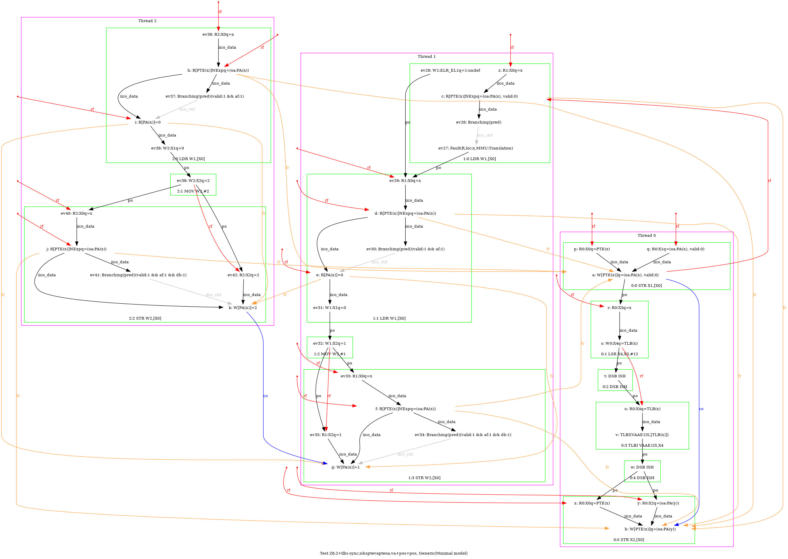
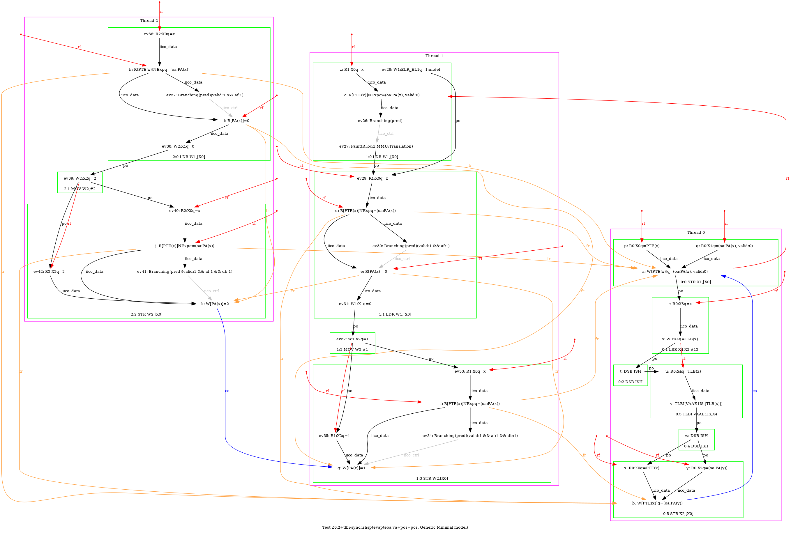
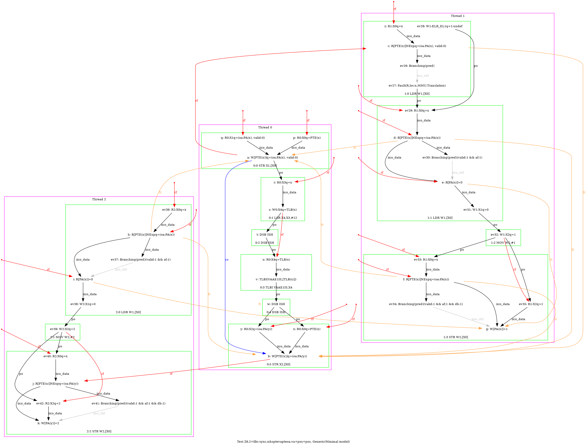
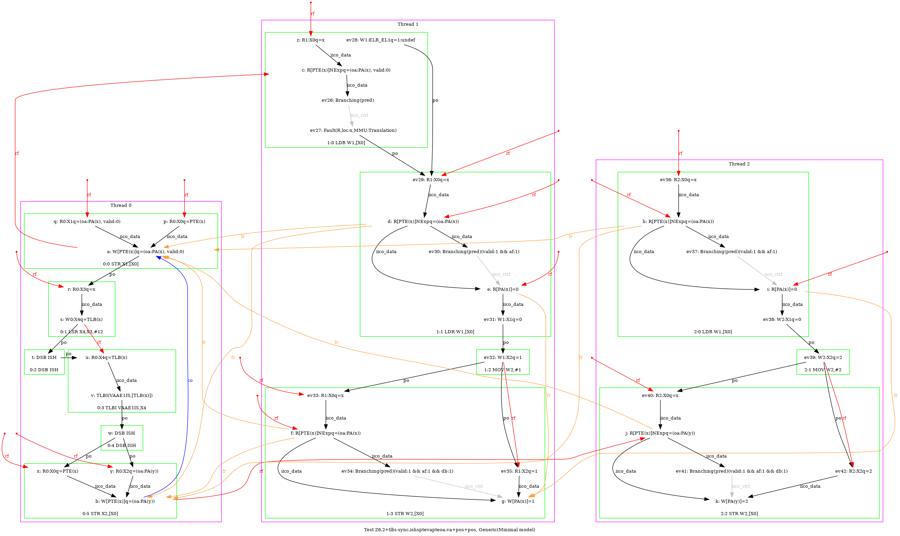

   …
AArch64 Z6.2+tlbi-sync.ishsptevapteoa.va+pos+pos
"TLBI-sync.ISHsWWPteVAPteOA.VA RfePteOA.VAP PosRW Rfe PosRW CoePPteVA"
Variant=imprecise
Cycle=Rfe PosRW CoePPteVA TLBI-sync.ISHsWWPteVAPteOA.VA RfePteOA.VAP PosRW
Relax=[PteVA,TLBI-sync.ISHsWW,PteOA,PteVA]
Safe=Rfe Coe PosRW
Generator=diy7 (version 7.56+02~dev)
Com=Rf Rf Co
Orig=TLBI-sync.ISHsWWPteVAPteOA.VA RfePteOA.VAP PosRW Rfe PosRW CoePPteVA
{ int x=0; int y=4;
0:X0=PTE(x); 0:X1=(oa:PA(x), valid:0); 0:X2=(oa:PA(y)); 0:X3=x;
1:X0=x;
2:X0=x;
}
P0 | P1 | P2 ;
STR X1,[X0] | LDR W1,[X0] | LDR W1,[X0] ;
LSR X4,X3,#12 | MOV W2,#1 | MOV W2,#2 ;
DSB ISH | STR W2,[X0] | STR W2,[X0] ;
TLBI VAAE1IS,X4 | | ;
DSB ISH | | ;
STR X2,[X0] | | ;
exists (1:X1=0 /\ 2:X1=0 /\ [x]=1 /\ fault(P1,x,MMU:Translation) /\ ~fault(P2,x)) \/ (1:X1=0 /\ 2:X1=0 /\ [x]=1 /\ fault(P1,x,MMU:Translation) /\ fault(P2,x,MMU:Translation)) \/ (1:X1=0 /\ 2:X1=0 /\ [x]=2 /\ fault(P1,x,MMU:Translation) /\ fault(P2,x,MMU:Translation)) \/ (1:X1=0 /\ 2:X1=0 /\ [x]=2 /\ fault(P2,x,MMU:Translation) /\ ~fault(P1,x)) \/ (1:X1=0 /\ 2:X1=1 /\ [x]=1 /\ fault(P1,x,MMU:Translation) /\ ~fault(P2,x)) \/ (1:X1=0 /\ 2:X1=1 /\ [x]=1 /\ fault(P1,x,MMU:Translation) /\ fault(P2,x,MMU:Translation)) \/ (1:X1=0 /\ 2:X1=1 /\ [x]=2 /\ fault(P1,x,MMU:Translation) /\ ~fault(P2,x)) \/ (1:X1=0 /\ 2:X1=1 /\ [x]=2 /\ fault(P1,x,MMU:Translation) /\ fault(P2,x,MMU:Translation)) \/ (1:X1=0 /\ 2:X1=1 /\ [x]=2 /\ fault(P2,x,MMU:Translation) /\ ~fault(P1,x)) \/ (1:X1=0 /\ 2:X1=4 /\ [x]=1 /\ fault(P1,x,MMU:Translation) /\ ~fault(P2,x)) \/ (1:X1=0 /\ 2:X1=4 /\ [x]=1 /\ fault(P1,x,MMU:Translation) /\ fault(P2,x,MMU:Translation)) \/ (1:X1=2 /\ 2:X1=0 /\ [x]=1 /\ fault(P1,x,MMU:Translation) /\ fault(P2,x,MMU:Translation)) \/ (1:X1=2 /\ 2:X1=0 /\ [x]=1 /\ fault(P2,x,MMU:Translation) /\ ~fault(P1,x)) \/ (1:X1=2 /\ 2:X1=0 /\ [x]=2 /\ fault(P1,x,MMU:Translation) /\ fault(P2,x,MMU:Translation)) \/ (1:X1=2 /\ 2:X1=0 /\ [x]=2 /\ fault(P2,x,MMU:Translation) /\ ~fault(P1,x)) \/ (1:X1=4 /\ 2:X1=0 /\ [x]=2 /\ fault(P1,x,MMU:Translation) /\ fault(P2,x,MMU:Translation)) \/ (1:X1=4 /\ 2:X1=0 /\ [x]=2 /\ fault(P2,x,MMU:Translation) /\ ~fault(P1,x))